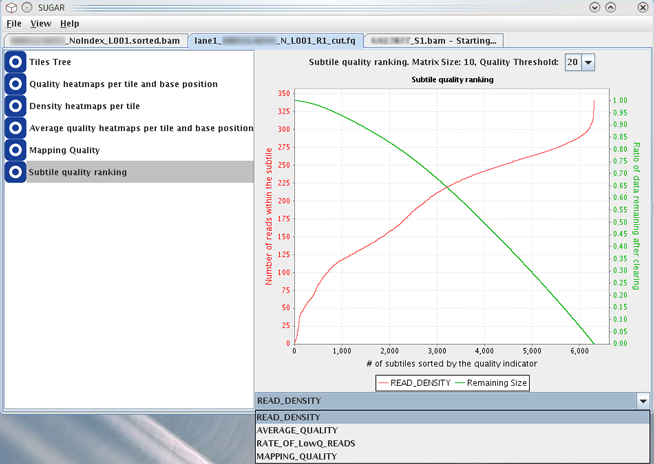

This module generates line graphs to predict remaining amount of data after the automatic deletion of low-quality data condcted by the Sugar by its function 'Saving Cleared Sequence File' (see the section "Saving Cleared Sequence File").

In the line graph, subtiles are ordered and positioned along the horizontal axis on the basis of four types of quality indicator following: (1) read density (READ_DENSITY), (2) average QV (AVERAGE_QUALITY), (3) proportion of low-quality reads (RATE_OF_LowQ_READS), and (4) mapped- per unmapped-reads ratio (MAPPING_QUALITY), of which users can choose to browse the graph.
In the anlaysis of this module, each tile is divided into a square matrix of sub-tiles with given resolution, as done in the analysis of the Quality Heatmaps module. For each subtile, the quality indicators above are calculated. Then the subtiles are ordered according to the value of these indicators and are dispayed on the graph, starting from lowest values on left-side to highest values on right-side of the horizontal axis of the graph. In these graphs, values of selected quality indicator are plotted as red line. Green line indicates the predicted amount of data that remains after automated subtile deletion with the given threshold value of quality indicators shown by the red line.
The quality indicators can be selected from a combo-box at the bottom of the window to browse the correspoinding line graph. The 4 types of quality indicator are as follows:
When the quality indicator 'RATE_OF_LowQ_READS' was selected, the value of 'Quality Threshold' shown in the combo-box at the top of the screen may play an important role. Different line graphs will be generated for the different QV threshold values. In general, the higher the QV threshold, this quality indicator (proportion of low-quality reads) is also elevated.